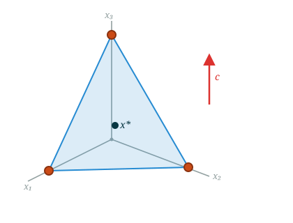
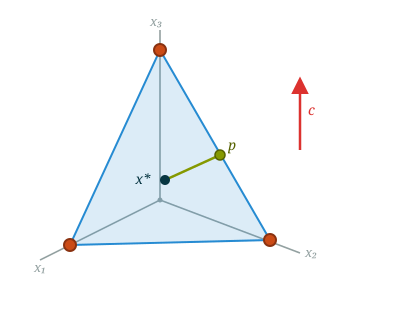
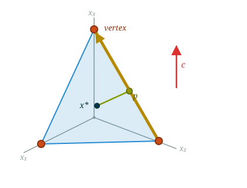

Introduction to Optimization
CO 250
Lecture 7
Kevin Shu
Lecture Outline
- Standard Equality Forms and Bases Review
- Examples of standard equality form and canonical forms
- Basic Solutions
Review from Last Lecture
Review from Last Lecture
Standard Equality Form
Standard Equality Form
The standard equality form for an LP is
| max | $c^{\intercal}x$ |
| such that | $Ax = b$ |
| $x \ge 0$ |
The only inequality constraints are that all variables are nonnegative; everything else is an equality constraint.
Standard Equality Form
Contrast SEF with the inequality form we have used so far:
| max | $c^{\intercal}x$ |
| such that | $Ax = b$ |
| $x \ge 0$ |
Standard equality form
| min | $c^{\intercal}x$ |
| such that | $Ax \le b$ |
Inequality form
Any LP can be converted into an equivalent LP in SEF.
Outcomes of Linear Programs
For LP $\max c^{\intercal} x$ s.t. $Ax = b, x\ge 0$, each outcome has a certificate.
Infeasible

Certificate: a free $y$ with
\[\begin{aligned}A^{\intercal} y &\ge 0\\b^{\intercal} y &< 0\end{aligned}\]
Has an optimal point

Certificate:
A feasible $x^*$ and a free $y$ with
\[\begin{aligned}A^{\intercal} y &\ge c\\b^{\intercal} y &= c^{\intercal} x^*\end{aligned}\]
Unbounded

Certificate:
A feasible $x$, and a $v$ with
\[\begin{aligned}Av &= 0\\v &\ge 0\\c^{\intercal} v &> 0\end{aligned}\]
Transforming LPs into SEF
The recipe has three steps:
- Step 1. Negate where needed so the objective is a max and every inequality is $\le$.
- Step 2. Add a nonnegative slack variable to each inequality to turn it into an equality. (Existing equalities need no slack.)
- Step 3. Replace each free variable $x_i$ with $x_i^+ - x_i^-$ where $x_i^+, x_i^- \ge 0$. (Variables already $\ge 0$ are left alone.)
Transforming LPs into SEF
Example 1
Start with this LP (here $x_1, x_2, x_3$ are all free):
| min | $x_1 + x_2 + x_3$ |
| such that | $x_1 + x_2 + x_3 \le 1$ |
| $x_1 + 2x_2 \ge 3$ |
Transforming LPs into SEF
Example 1 — Step 1
Make the objective a max and all inequalities $\le$ by negating:
| max | $-x_1 - x_2 - x_3$ |
| such that | $x_1 + x_2 + x_3 \le 1$ |
| $-x_1 - 2x_2 \le -3$ |
Transforming LPs into SEF
Example 1 — Step 2
Add a nonnegative slack variable to each inequality:
| max | $-x_1 - x_2 - x_3$ |
| such that | $x_1 + x_2 + x_3 + s_1 = 1$ |
| $-x_1 - 2x_2 + s_2 = -3$ | |
| $s_1, s_2 \ge 0$ |
Transforming LPs into SEF
Example 1 — Step 3
Replace each free variable $x_i$ with $x_i^+ - x_i^-$:
| max | $-(x_1^+-x_1^-) - (x_2^+-x_2^-) - (x_3^+-x_3^-)$ |
| such that | $(x_1^+-x_1^-) + (x_2^+-x_2^-) + (x_3^+-x_3^-) + s_1 = 1$ |
| $-(x_1^+-x_1^-) - 2(x_2^+-x_2^-) + s_2 = -3$ | |
| $x_i^+, x_i^-, s_1, s_2 \ge 0$ |
This LP is now in standard equality form.
Transforming LPs into SEF
Example 2
Here $x_2 \ge 0$ already, $x_1$ is free, and there is an existing equality constraint:
| min | $2x_1 + 3x_2$ |
| such that | $x_1 + x_2 \ge 4$ |
| $x_1 + 2x_2 = 5$ | |
| $x_2 \ge 0$ |
Transforming LPs into SEF
Example 2 — Step 1
Make it a max and the inequality $\le$ (the equality is untouched):
| max | $-2x_1 - 3x_2$ |
| such that | $-x_1 - x_2 \le -4$ |
| $x_1 + 2x_2 = 5$ | |
| $x_2 \ge 0$ |
Transforming LPs into SEF
Example 2 — Step 2
Add a slack to the inequality only; the equality $x_1 + 2x_2 = 5$ needs no slack:
| max | $-2x_1 - 3x_2$ |
| such that | $-x_1 - x_2 + s_1 = -4$ |
| $x_1 + 2x_2 = 5$ | |
| $x_2, s_1 \ge 0$ |
Transforming LPs into SEF
Example 2 — Step 3
Replace only the free variable $x_1$ with $x_1^+ - x_1^-$; since $x_2 \ge 0$ already, it is left alone:
| max | $-2(x_1^+-x_1^-) - 3x_2$ |
| such that | $-(x_1^+-x_1^-) - x_2 + s_1 = -4$ |
| $(x_1^+-x_1^-) + 2x_2 = 5$ | |
| $x_1^+, x_1^-, x_2, s_1 \ge 0$ |
This LP is now in standard equality form.
Bases and Canonical Forms
Bases and Canonical Forms
A basis (plural bases) of a matrix is a set of columns of the matrix which are linearly independent, with as many columns as possible.
A variable is basic if it is part of the basis, and nonbasic if it is not.
For example, consider \[A = \begin{pmatrix} 1 & 1 & 2 & 0 \\ 2 & 0 & 4 & 1\end{pmatrix}.\] A basis is a set of two columns that are linearly independent.
Most pairs of columns form a basis, for instance \[ \{1,2\},\qquad \{2,3\},\qquad \{3,4\}. \]
But $\{1,3\}$ is not a basis: column $3$ is twice column $1$, so those columns are linearly dependent.
Bases and Canonical Forms
The number of elements of a basis should be the rank of the matrix $A$ .
If the matrix $A$ has linearly independent rows (which will typically be the case in this class), then the basis will have the same number of elements as there are rows of the matrix.
\[ A = \begin{pmatrix} 1 & 2 & 3 & 4\\ 2 & 4 & 6 & 8\\ \end{pmatrix} \]
This matrix is rank 1 (the two rows are linearly dependent, and all rows are the same), so a basis consists of any one column.
Row reduction yields \[ A = \begin{pmatrix} 1 & 2 & 3 & 4\\ 0 & 0 & 0 & 0\\ \end{pmatrix} \]
Bases and Canonical Forms
There are many different ways of writing essentially the same system of linear equations: we can apply row operations without changing the solution set.
For every basis of a matrix $A$, there is a way to canonicalize (i.e. choose a unique presentation of the linear system) by bringing it into RREF.
Bases and Canonical Forms
Example: \[ \begin{pmatrix} \color{blue}1 & \color{blue}2 & 3 \\ \color{blue}4 & \color{blue}5 & 6\end{pmatrix} \begin{pmatrix}x_1\\x_2\\x_3\end{pmatrix} = \begin{pmatrix} 1 \\ 0\end{pmatrix}. \]
We can row reduce this matrix using the first two columns (i.e. the basis $\{1,2\}$).
Bases and Canonical Forms
Example: \[ \begin{pmatrix} \color{blue}1 & \color{blue}2 & 3 \\ \color{blue}4 & \color{blue}5 & 6\end{pmatrix} \begin{pmatrix}x_1\\x_2\\x_3\end{pmatrix} = \begin{pmatrix} 1 \\ 0\end{pmatrix} \] \[ \downarrow_{\rho_2 - 4 \rho_1}\] \[ \begin{pmatrix} \color{blue}1 & \color{blue}2 & 3 \\ \color{blue}0 & \color{blue}{-3} & -6\end{pmatrix} \begin{pmatrix}x_1\\x_2\\x_3\end{pmatrix} = \begin{pmatrix} 1 \\ -4 \end{pmatrix} \]
Note that even though we change the form of the linear system, the solutions stay the same. In particular, any nonnegative solution to the first system is a nonnegative solution to the second (and vice versa).
Bases and Canonical Forms
Example:
Further row operations reduce the problem to Row Reduced Echelon Form (RREF)
\[ \begin{pmatrix} \color{blue}1 & \color{blue}2 & 3 \\ \color{blue}0 & \color{blue}{-3} & -6\end{pmatrix} \begin{pmatrix}x_1\\x_2\\x_3\end{pmatrix} = \begin{pmatrix} 1 \\ -4 \end{pmatrix} \] \[ \downarrow_{\rho_2 / -3}\] \[ \begin{pmatrix} \color{blue}1 & \color{blue}2 & 3 \\ \color{blue}0 & \color{blue}1 & 2\end{pmatrix} \begin{pmatrix}x_1\\x_2\\x_3\end{pmatrix} = \begin{pmatrix} 1 \\ 4/3 \end{pmatrix} \]
Bases and Canonical Forms
Example:
Further row operations reduce the problem to Row Reduced Echelon Form (RREF)
\[ \begin{pmatrix} \color{blue}1 & \color{blue}2 & 3 \\ \color{blue}0 & \color{blue}1 & 2\end{pmatrix} \begin{pmatrix}x_1\\x_2\\x_3\end{pmatrix} = \begin{pmatrix} 1 \\ 4/3 \end{pmatrix} \] \[ \downarrow_{\rho_1 - 2 \rho 2}\] \[ \begin{pmatrix} \color{blue}1 & \color{blue}0 & -1 \\ \color{blue}0 & \color{blue}1 & 2\end{pmatrix} \begin{pmatrix}x_1\\x_2\\x_3\end{pmatrix} = \begin{pmatrix} -5/3 \\ 4/3 \end{pmatrix} \]
Bases and Canonical Forms
\[ \begin{pmatrix} \color{blue}1 & \color{blue}0 & -1 \\ \color{blue}0 & \color{blue}1 & 2\end{pmatrix} \begin{pmatrix}x_1\\x_2\\x_3\end{pmatrix} = \begin{pmatrix} -5/3 \\ 4/3 \end{pmatrix} \]
This system of equations tells us that $x_1 = -\frac{5}{3} + x_3$ and $x_2 = \frac{4}{3} - 2x_3.$
Bases and Canonical Forms
Example: Let us instead reduce with respect to columns $1$ and $3$. \[ \begin{pmatrix} \color{red}1 & 2 & \color{red}3 \\ \color{red}4 & 5 & \color{red}6\end{pmatrix} \begin{pmatrix}x_1\\x_2\\x_3\end{pmatrix} = \begin{pmatrix} 1 \\ 0\end{pmatrix} \]
We apply row operations to reduce the highlighted columns.
Bases and Canonical Forms
Example: \[ \begin{pmatrix} \color{red}1 & 2 & \color{red}3 \\ \color{red}4 & 5 & \color{red}6\end{pmatrix} \begin{pmatrix}x_1\\x_2\\x_3\end{pmatrix} = \begin{pmatrix} 1 \\ 0\end{pmatrix} \] \[ \downarrow_{\rho_2 - 4 \rho_1}\] \[ \begin{pmatrix} \color{red}1 & 2 & \color{red}3 \\ \color{red}0 & -3 & \color{red}{-6}\end{pmatrix} \begin{pmatrix}x_1\\x_2\\x_3\end{pmatrix} = \begin{pmatrix} 1 \\ -4 \end{pmatrix} \]
As before, the solution set is unchanged by row operations.
Bases and Canonical Forms
Example:
We reduce with respect to columns $1$ and $3$.
\[ \begin{pmatrix} \color{red}1 & 2 & \color{red}3 \\ \color{red}0 & -3 & \color{red}{-6}\end{pmatrix} \begin{pmatrix}x_1\\x_2\\x_3\end{pmatrix} = \begin{pmatrix} 1 \\ -4 \end{pmatrix} \] \[ \downarrow_{\rho_2 / -6}\] \[ \begin{pmatrix} \color{red}1 & 2 & \color{red}3 \\ \color{red}0 & 1/2 & \color{red}1\end{pmatrix} \begin{pmatrix}x_1\\x_2\\x_3\end{pmatrix} = \begin{pmatrix} 1 \\ 2/3 \end{pmatrix} \]
Bases and Canonical Forms
Example:
We reduce with respect to columns $1$ and $3$.
\[ \begin{pmatrix} \color{red}1 & 2 & \color{red}3 \\ \color{red}0 & 1/2 & \color{red}1\end{pmatrix} \begin{pmatrix}x_1\\x_2\\x_3\end{pmatrix} = \begin{pmatrix} 1 \\ 2/3 \end{pmatrix} \] \[ \downarrow_{\rho_1 - 3 \rho_2}\] \[ \begin{pmatrix} \color{red}1 & 1/2 & \color{red}0 \\ \color{red}0 & 1/2 & \color{red}1\end{pmatrix} \begin{pmatrix}x_1\\x_2\\x_3\end{pmatrix} = \begin{pmatrix} -1 \\ 2/3 \end{pmatrix} \]
Bases and Canonical Forms
\[ \begin{pmatrix} \color{red}1 & 1/2 & \color{red}0 \\ \color{red}0 & 1/2 & \color{red}1\end{pmatrix} \begin{pmatrix}x_1\\x_2\\x_3\end{pmatrix} = \begin{pmatrix} -1 \\ 2/3 \end{pmatrix} \]
Now $x_2$ is the free coordinate: $x_1 = -1 - \frac{1}{2}x_2$ and $x_3 = \frac{2}{3} - \frac{1}{2}x_2.$
Bases and Canonical Forms
For a linear program in SEF
| max | $c^{\intercal}x$ |
| such that | $Ax = b$ |
| $x \ge 0$ |
We can rewrite it so that its constraints are in RREF (with respect to a given basis).
We can also rewrite the objective so that it is more canonical.
Bases and Canonical Forms
Rewriting the objective
Consider
| max | $x_1 + x_2$ |
| such that | $x_1 - x_2 = 2$ |
| $x_1, x_2 \ge 0$ |
If $x_1 - x_2 = 2$, then $x_1 = 2 + x_2$ and the objective could also be written.
| max | $(2+x_2)$ $+x_2$ |
| such that | $x_1 - x_2 = 2$ |
| $x_1, x_2 \ge 0$ |
.
Bases and Canonical Forms
Rewriting the objective
Consider
| max | $x_1 + x_2$ |
| such that | $x_1 - x_2 = 2$ |
| $x_1, x_2 \ge 0$ |
If $x_1 - x_2 = 2$, then $x_1 = 2 + x_2$ and the objective could also be written.
| max | $2+2x_2$ |
| such that | $x_1 - x_2 = 2$ |
| $x_1, x_2 \ge 0$ |
The objective has a constant term. It doesn't affect the optimization.
Bases and Canonical Forms
The RREF of a linear system solves for the basic variables in terms of the variables not in the basis.
If we backsubstitute for the basic variables in the objective, then we can remove the dependence of the objective on those variables.
Bases and Canonical Forms
If the full-rank matrix $A$ is in RREF (and the basis is the first few columns), then $A$ has the form $\begin{pmatrix}I & A_N\end{pmatrix}$, where $A_N$ is some other matrix.
| max | $c_B^{\intercal}x_B $ $+ c_N^{\intercal}x_N$ |
| such that | $\begin{pmatrix} I & A_{N} \end{pmatrix}\begin{pmatrix}x_B \\ x_N\end{pmatrix} = \begin{pmatrix}b_B\\b_N\end{pmatrix}$ |
| $x_B, x_N \ge 0$ |
The equations then become $x_B + A_Nx_N = b$, or $x_B = b-A_Nx_N$.
Bases and Canonical Forms
If the full-rank matrix $A$ is in RREF (and the basis is the first few columns), then $A$ has the form $\begin{pmatrix}I & A_N\end{pmatrix}$, where $A_N$ is some other matrix.
| max | $c_B^{\intercal}x_B $ $+ c_N^{\intercal}x_N$ |
| such that | $\begin{pmatrix} I & A_{N} \end{pmatrix}\begin{pmatrix}x_B \\ x_N\end{pmatrix} = \begin{pmatrix}b_B\\b_N\end{pmatrix}$ |
| $x_B, x_N \ge 0$ |
The equations then become $x_B + A_Nx_N = b$, or $x_B = b-A_Nx_N$.
Bases and Canonical Forms
If the full-rank matrix $A$ is in RREF (and the basis is the first few columns), then $A$ has the form $\begin{pmatrix}I & A_N\end{pmatrix}$, where $A_N$ is some other matrix.
| max | $\color{blue}{c_B^{\intercal}(b-A_Nx_N) }$ $+ c_N^{\intercal}x_N$ |
| such that | $\begin{pmatrix} I & A_{N} \end{pmatrix}\begin{pmatrix}x_B \\ x_N\end{pmatrix} = \begin{pmatrix}b_B\\b_N\end{pmatrix}$ |
| $x_B, x_N \ge 0$ |
The equations then become $x_B + A_Nx_N = b$, or $x_B = b-A_Nx_N$.
Bases and Canonical Forms
If the full-rank matrix $A$ is in RREF (and the basis is the first few columns), then $A$ has the form $\begin{pmatrix}I & A_N\end{pmatrix}$, where $A_N$ is some other matrix.
| max | $(c_N - A_N^{\intercal}c_B)^{\intercal}x_N+ c_B^{\intercal}b$ |
| such that | $\begin{pmatrix} I & A_{N} \end{pmatrix}\begin{pmatrix}x_B \\ x_N\end{pmatrix} = \begin{pmatrix}b_B\\b_N\end{pmatrix}$ |
| $x_B, x_N \ge 0$ |
Bases and Canonical Forms
Example:
| max | $x_1 + x_2$ $+ x_3 + x_4$ |
| such that | $x_1 $ $- x_3 + x_4 = 2$ |
| $x_2 $ $+ 2x_3 + x_4 = 3$ | |
| $x_1, x_2, x_3, x_4 \ge 0$ |
The linear system is in RREF. We can substitute back in for $x_1$ and $x_2$.
Bases and Canonical Forms
Example:
| max | $(2 + x_3 - x_4) + (3 - 2x_3 - x_4) $ $+ x_3 + x_4$ |
| such that | $x_1 - x_3 + x_4 = 2$ |
| such that | $x_2 + 2x_3 + x_4 = 3$ |
| $x_1, x_2, x_3, x_4 \ge 0$ |
The linear system is in RREF. We can substitute back in for $x_1$ and $x_2$.
Bases and Canonical Forms
A canonical form of a linear program with respect to a basis $B$ has two properties:
- The linear system is in RREF.
- The basic variables do not appear in the objective (i.e. their coefficients are 0 in $c$).
Canonical Forms: Examples
Canonical Forms
Consider the LP in SEF
| max | $\begin{pmatrix}1 & 2 & 3 & 4\end{pmatrix} x$ |
| such that | $\begin{pmatrix} 1 & 2 & 1 & 0 \\ 1 & 1 & 0 & 1\end{pmatrix} x = \begin{pmatrix} 3 \\ 2\end{pmatrix}$ |
| $x \ge 0$ |
A basis is any $2$ linearly independent columns. All $\binom{4}{2} = 6$ pairs are independent, so there are six canonical forms.
Canonical Forms
Take the basis $\{1,2\}$. First bring the constraints to RREF on columns $1,2$.
\[ \begin{aligned} \begin{pmatrix} \color{blue}1 & \color{blue}2 & 1 & 0 \\ \color{blue}1 & \color{blue}1 & 0 & 1\end{pmatrix} x &= \begin{pmatrix} 3 \\ 2\end{pmatrix} &\rightarrow_{\rho_2 - \rho_1}\\ \begin{pmatrix} \color{blue}1 & \color{blue}2 & 1 & 0 \\ \color{blue}0 & \color{blue}{-1} & -1 & 1\end{pmatrix} x &= \begin{pmatrix} 3 \\ -1\end{pmatrix} &\rightarrow_{-\rho_2}\\ \begin{pmatrix} \color{blue}1 & \color{blue}2 & 1 & 0 \\ \color{blue}0 & \color{blue}1 & 1 & -1\end{pmatrix} x &= \begin{pmatrix} 3 \\ 1\end{pmatrix} &\rightarrow_{\rho_1 - 2\rho_2}\\ \begin{pmatrix} \color{blue}1 & \color{blue}0 & -1 & 2 \\ \color{blue}0 & \color{blue}1 & 1 & -1\end{pmatrix} x &= \begin{pmatrix} 1 \\ 1\end{pmatrix} \end{aligned} \]
Canonical Forms
The linear constraints are now in RREF.
\[\begin{pmatrix} \color{blue}1 & \color{blue}0 & -1 & 2 \\ \color{blue}0 & \color{blue}1 & 1 & -1\end{pmatrix} x = \begin{pmatrix} 1 \\ 1\end{pmatrix}\]
For the objective, note that it is equivalently \[ \begin{pmatrix}\color{blue}1 \\ \color{blue}2 \\ 3 \\ 4\end{pmatrix}^{\intercal} x - \left(\begin{pmatrix}\color{blue}1 \\ \color{blue}0 \\ -1 \\ 2 \end{pmatrix}^{\intercal} x - 1\right)- 2\left(\begin{pmatrix} \color{blue}0 \\ \color{blue}1 \\ 1 \\ -1 \end{pmatrix}^{\intercal} x - 1\right) = \begin{pmatrix} \color{blue}0 \\ \color{blue}0 \\ 2 \\ 4 \end{pmatrix}^{\intercal} x + 3. \]
Canonical Forms
Now rewrite the objective so the basic variables $x_1, x_2$ have coefficient $0$.
The LP in canonical form for the basis $\{1,2\}$ is
| max | $\begin{pmatrix} 0 & 0 & 2 & 4 \end{pmatrix}x + 3$ |
| such that | $\begin{pmatrix} 1 & 0 & -1 & 2 \\ 0 & 1 & 1 & -1\end{pmatrix} x = \begin{pmatrix} 1 \\ 1\end{pmatrix}$ |
| $x \ge 0$ |
Canonical Forms - 6 Examples
| max | $\begin{pmatrix} \color{blue}0 & \color{blue}0 & 2 & 4\end{pmatrix} x + 3$ |
| such that | $\begin{pmatrix} \color{blue}1 & \color{blue}0 & -1 & 2 \\ \color{blue}0 & \color{blue}1 & 1 & -1\end{pmatrix} x = \begin{pmatrix} 1 \\ 1\end{pmatrix}$ |
| $x \ge 0$ |
| max | $\begin{pmatrix} \color{blue}0 & -2 & \color{blue}0 & 6\end{pmatrix} x + 5$ |
| such that | $\begin{pmatrix} \color{blue}1 & 1 & \color{blue}0 & 1 \\ \color{blue}0 & 1 & \color{blue}1 & -1\end{pmatrix} x = \begin{pmatrix} 2 \\ 1\end{pmatrix}$ |
| $x \ge 0$ |
| max | $\begin{pmatrix} \color{blue}0 & 4 & 6 & \color{blue}0\end{pmatrix} x - 1$ |
| such that | $\begin{pmatrix} \color{blue}1 & 2 & 1 & \color{blue}0 \\ \color{blue}0 & -1 & -1 & \color{blue}1\end{pmatrix} x = \begin{pmatrix} 3 \\ -1\end{pmatrix}$ |
| $x \ge 0$ |
| max | $\begin{pmatrix} 2 & \color{blue}0 & \color{blue}0 & 8\end{pmatrix} x + 1$ |
| such that | $\begin{pmatrix} 1 & \color{blue}1 & \color{blue}0 & 1 \\ -1 & \color{blue}0 & \color{blue}1 & -2\end{pmatrix} x = \begin{pmatrix} 2 \\ -1\end{pmatrix}$ |
| $x \ge 0$ |
| max | $\begin{pmatrix} -2 & \color{blue}0 & 4 & \color{blue}0\end{pmatrix} x + 5$ |
| such that | $\begin{pmatrix} 1/2 & \color{blue}1 & 1/2 & \color{blue}0 \\ 1/2 & \color{blue}0 & -1/2 & \color{blue}1\end{pmatrix} x = \begin{pmatrix} 3/2 \\ 1/2\end{pmatrix}$ |
| $x \ge 0$ |
| max | $\begin{pmatrix} -6 & -8 & \color{blue}0 & \color{blue}0\end{pmatrix} x + 17$ |
| such that | $\begin{pmatrix} 1 & 2 & \color{blue}1 & \color{blue}0 \\ 1 & 1 & \color{blue}0 & \color{blue}1\end{pmatrix} x = \begin{pmatrix} 3 \\ 2\end{pmatrix}$ |
| $x \ge 0$ |
Canonical Forms
Consider the LP in SEF
| max | $\begin{pmatrix}\color{blue}1 & \color{blue}1 & 1 & \color{blue}1\end{pmatrix} x$ |
| such that | $\begin{pmatrix} \color{blue}2 & \color{blue}4 & 2 & \color{blue}2 \\ \color{blue}1 & \color{blue}3 & 2 & \color{blue}1 \\ \color{blue}3 & \color{blue}5 & 1 & \color{blue}2\end{pmatrix} x = \begin{pmatrix} 8 \\ 7 \\ 9\end{pmatrix}$ |
| $x \ge 0$ |
Columns $1,2,4$ are linearly independent, so $\{1,2,4\}$ is a basis. Let us row reduce the constraints, then rewrite the objective.
Canonical Forms
Row $1$: normalize its pivot to $1$.
\[ \begin{pmatrix} \color{green}2 & 4 & 2 & 2 \\ 1 & 3 & 2 & 1 \\ 3 & 5 & 1 & 2\end{pmatrix} x = \begin{pmatrix} 8 \\ 7 \\ 9\end{pmatrix}. \] \[ \downarrow_{\rho_1 = \rho_1 / 2} \] \[ \begin{pmatrix} \color{green}1 & 2 & 1 & 1 \\ 1 & 3 & 2 & 1 \\ 3 & 5 & 1 & 2\end{pmatrix} x = \begin{pmatrix} 4 \\ 7 \\ 9\end{pmatrix}. \]Canonical Forms
Row $1$: use it to eliminate column $1$ from the rows below.
\[ \begin{pmatrix} \color{green}1 & 2 & 1 & 1 \\ \color{green}1 & 3 & 2 & 1 \\ \color{green}3 & 5 & 1 & 2\end{pmatrix} x = \begin{pmatrix} 4 \\ 7 \\ 9\end{pmatrix}. \] \[ \downarrow_{\rho_2 = \rho_2 - \rho_1,\;\; \rho_3 = \rho_3 - 3\rho_1} \] \[ \begin{pmatrix} \color{green}1 & 2 & 1 & 1 \\ \color{green}0 & 1 & 1 & 0 \\ \color{green}0 & -1 & -2 & -1\end{pmatrix} x = \begin{pmatrix} 4 \\ 3 \\ -3\end{pmatrix}. \]Canonical Forms
Row $2$: its pivot is already $1$. Use it to eliminate column $2$ from the row below.
\[ \begin{pmatrix} 1 & \color{green}2 & 1 & 1 \\ 0 & \color{green}1 & 1 & 0 \\ 0 & \color{green}{-1} & -2 & -1\end{pmatrix} x = \begin{pmatrix} 4 \\ 3 \\ -3\end{pmatrix}. \] \[ \downarrow_{\rho_3 = \rho_3 + \rho_2} \] \[ \begin{pmatrix} 1 & \color{green}2 & 1 & 1 \\ 0 & \color{green}1 & 1 & 0 \\ 0 & \color{green}0 & -1 & -1\end{pmatrix} x = \begin{pmatrix} 4 \\ 3 \\ 0\end{pmatrix}. \]Canonical Forms
Row $3$: we take column $4$ as the third pivot. Normalize it to $1$.
\[ \begin{pmatrix} 1 & 2 & 1 & \color{green}1 \\ 0 & 1 & 1 & \color{green}0 \\ 0 & 0 & -1 & \color{green}{-1}\end{pmatrix} x = \begin{pmatrix} 4 \\ 3 \\ 0\end{pmatrix}. \] \[ \downarrow_{\rho_3 = -\rho_3} \] \[ \begin{pmatrix} 1 & 2 & 1 & \color{green}1 \\ 0 & 1 & 1 & \color{green}0 \\ 0 & 0 & 1 & \color{green}1\end{pmatrix} x = \begin{pmatrix} 4 \\ 3 \\ 0\end{pmatrix}. \]Canonical Forms
Back-substitute: use row $3$ to clear column $4$ from the rows above.
\[ \begin{pmatrix} 1 & 2 & 1 & \color{green}1 \\ 0 & 1 & 1 & \color{green}0 \\ 0 & 0 & 1 & \color{green}1\end{pmatrix} x = \begin{pmatrix} 4 \\ 3 \\ 0\end{pmatrix}. \] \[ \downarrow_{\rho_1 = \rho_1 - \rho_3} \] \[ \begin{pmatrix} 1 & 2 & 0 & \color{green}0 \\ 0 & 1 & 1 & \color{green}0 \\ 0 & 0 & 1 & \color{green}1\end{pmatrix} x = \begin{pmatrix} 4 \\ 3 \\ 0\end{pmatrix}. \]Canonical Forms
Back-substitute: use row $2$ to clear column $2$ from row $1$.
\[ \begin{pmatrix} 1 & \color{green}2 & 0 & 0 \\ 0 & \color{green}1 & 1 & 0 \\ 0 & \color{green}0 & 1 & 1\end{pmatrix} x = \begin{pmatrix} 4 \\ 3 \\ 0\end{pmatrix}. \] \[ \downarrow_{\rho_1 = \rho_1 - 2\rho_2} \] \[ \begin{pmatrix} \color{green}1 & \color{green}0 & -2 & \color{green}0 \\ \color{green}0 & \color{green}1 & 1 & \color{green}0 \\ \color{green}0 & \color{green}0 & 1 & \color{green}1\end{pmatrix} x = \begin{pmatrix} -2 \\ 3 \\ 0\end{pmatrix}. \]The constraints are in RREF for the basis $\{1,2,4\}$.
Canonical Forms
The linear constraints are now in RREF.
For the objective, note that it is equivalently \[ \begin{pmatrix}\color{blue}1 \\ \color{blue}1 \\ 1 \\ \color{blue}1\end{pmatrix}^{\intercal}x - \left(\begin{pmatrix}\color{blue}1 \\ \color{blue}0 \\ -2 \\ \color{blue}0 \end{pmatrix}^{\intercal}x + 2\right)- \left(\begin{pmatrix}\color{blue}0 \\ \color{blue}1 \\ 1 \\ \color{blue}0 \end{pmatrix}^{\intercal}x - 3\right)- \left(\begin{pmatrix}\color{blue}0 \\ \color{blue}0 \\ 1 \\ \color{blue}1 \end{pmatrix}^{\intercal}x\right) = \begin{pmatrix} \color{blue}0 \\ \color{blue}0 \\ 1 \\ \color{blue}0 \end{pmatrix}^{\intercal}x + 1. \]
Canonical Forms
Now rewrite the objective so the basic variables $x_1, x_2, x_4$ have coefficient $0$.
The LP in canonical form for the basis $\{1,2,4\}$ is
| max | $\begin{pmatrix} 0 & 0 & 1 & 0 \end{pmatrix}x + 1$ |
| such that | $\begin{pmatrix} 1 & 0 & -2 & 0 \\ 0 & 1 & 1 & 0 \\ 0 & 0 & 1 & 1\end{pmatrix} x = \begin{pmatrix} -2 \\ 3 \\ 0\end{pmatrix}$ |
| $x \ge 0$ |
Basic Solutions
Basic Solutions
For a matrix in RREF with respect to a basis $B$, there is a unique solution $x$ where all of the nonbasic variables are 0.
Such a solution is called a basic solution.
Basic Solutions
Example \[ \begin{pmatrix} \color{green}1 & \color{green}0 & -2 & \color{green}0 \\ \color{green}0 & \color{green}1 & 1 & \color{green}0 \\ \color{green}0 & \color{green}0 & 1 & \color{green}1\end{pmatrix} x = \begin{pmatrix} -2 \\ 3 \\ 1\end{pmatrix}. \]
Basic solutions solve the augmented linear system. \[ \begin{pmatrix} \color{green}1 & \color{green}0 & -2 & \color{green}0 \\ \color{green}0 & \color{green}1 & 1 & \color{green}0 \\ \color{green}0 & \color{green}0 & 1 & \color{green}1 \\ 0 & 0 & 1 & 0\end{pmatrix} x = \begin{pmatrix} -2 \\ 3 \\ 1 \\ 0\end{pmatrix}. \] This is now a square system, that can be seen to be invertible, so there is a unique solution.
Basic Solutions
More generally, if we have a matrix $A$ in RREF (and the basis is the first few columns), it will look like \[ \begin{pmatrix} I & A'\\ 0 & I\end{pmatrix} x = \begin{pmatrix}b\\0\end{pmatrix}. \]
This matrix is invertible, so there is a unique solution to the linear system.
The unique solution is actually \[ x = \begin{pmatrix} b \\ 0 \end{pmatrix}. \]
Basic Solutions
Example \[ \begin{pmatrix} \color{green}1 & \color{green}0 & -2 & \color{green}0 \\ \color{green}0 & \color{green}1 & 1 & \color{green}0 \\ \color{green}0 & \color{green}0 & 1 & \color{green}1\end{pmatrix} x = \begin{pmatrix} -2 \\ 3 \\ 1\end{pmatrix}. \]
Here, the basic solution is \[ x = \begin{pmatrix} -2 \\ 3 \\ 0 \\ 1\end{pmatrix}. \]
Basic Solutions
Generally, you can get the basic solution with respect to a basis by taking the RREF linear system $Ax = b$ and then make $x$ by padding $b$ with zeros at all entries that correspond to nonbasic variables.
Basic Feasible Solutions
Given an LP in SEF, a basic feasible solution is a basic solution to the linear system with nonnegative entries.
\[ \begin{pmatrix} \color{blue}1 & \color{blue}0 & -2 & \color{blue}0 \\ \color{blue}0 & \color{blue}1 & 1 & \color{blue}0 \\ \color{blue}0 & \color{blue}0 & 1 & \color{blue}1\end{pmatrix} x = \begin{pmatrix} 2 \\ 3 \\ 1\end{pmatrix} \]
basis $\{1,2,4\}$ gives $x = (2, 3, 0, 1) \ge 0$.
This is a basic feasible solution.
\[ \begin{pmatrix} \color{blue}1 & -2 & \color{blue}0 & \color{blue}0 \\ \color{blue}0 & 1 & \color{blue}1 & \color{blue}0 \\ \color{blue}0 & 1 & \color{blue}0 & \color{blue}1\end{pmatrix} x = \begin{pmatrix} -2 \\ 3 \\ 1\end{pmatrix} \]
basis $\{1,3,4\}$ gives $x = (-2, 0, 3, 1)$.
Since $x_1 = -2 < 0$, this is not feasible.
Remember the linear system \[\begin{pmatrix} 1 & 0 & -1 & 2 \\ 0 & 1 & 1 & -1\end{pmatrix} x = \begin{pmatrix} 1 \\ 1\end{pmatrix}.\] It has 6 RREFs with respect to different bases. Some of these correspond to basic feasible solutions and others correspond to basic solutions that are not feasible.
Canonical Forms - 6 Examples
$x_b = \begin{pmatrix} 1 \\ 1 \\ 0 \\ 0\end{pmatrix}$
| max | $\begin{pmatrix} \color{blue}0 & \color{blue}0 & 2 & 4\end{pmatrix} x + 3$ |
| such that | $\begin{pmatrix} \color{blue}1 & \color{blue}0 & -1 & 2 \\ \color{blue}0 & \color{blue}1 & 1 & -1\end{pmatrix} x = \begin{pmatrix} 1 \\ 1\end{pmatrix}$ |
| $x \ge 0$ |
$x_b = \begin{pmatrix} 2 \\ 0 \\ 1 \\ 0\end{pmatrix}$
| max | $\begin{pmatrix} \color{blue}0 & -2 & \color{blue}0 & 6\end{pmatrix} x + 5$ |
| such that | $\begin{pmatrix} \color{blue}1 & 1 & \color{blue}0 & 1 \\ \color{blue}0 & 1 & \color{blue}1 & -1\end{pmatrix} x = \begin{pmatrix} 2 \\ 1\end{pmatrix}$ |
| $x \ge 0$ |
$x_b = \begin{pmatrix} 3 \\ 0 \\ 0 \\ -1\end{pmatrix}$
| max | $\begin{pmatrix} \color{blue}0 & 4 & 6 & \color{blue}0\end{pmatrix} x - 1$ |
| such that | $\begin{pmatrix} \color{blue}1 & 2 & 1 & \color{blue}0 \\ \color{blue}0 & -1 & -1 & \color{blue}1\end{pmatrix} x = \begin{pmatrix} 3 \\ -1\end{pmatrix}$ |
| $x \ge 0$ |
$x_b = \begin{pmatrix} 0 \\ 2 \\ -1 \\ 0\end{pmatrix}$
| max | $\begin{pmatrix} 2 & \color{blue}0 & \color{blue}0 & 8\end{pmatrix} x + 1$ |
| such that | $\begin{pmatrix} 1 & \color{blue}1 & \color{blue}0 & 1 \\ -1 & \color{blue}0 & \color{blue}1 & -2\end{pmatrix} x = \begin{pmatrix} 2 \\ -1\end{pmatrix}$ |
| $x \ge 0$ |
$x_b = \begin{pmatrix} 0 \\ 3/2 \\ 0 \\ 1/2\end{pmatrix}$
| max | $\begin{pmatrix} -2 & \color{blue}0 & 4 & \color{blue}0\end{pmatrix} x + 5$ |
| such that | $\begin{pmatrix} 1/2 & \color{blue}1 & 1/2 & \color{blue}0 \\ 1/2 & \color{blue}0 & -1/2 & \color{blue}1\end{pmatrix} x = \begin{pmatrix} 3/2 \\ 1/2\end{pmatrix}$ |
| $x \ge 0$ |
$x_b = \begin{pmatrix} 0 \\ 0 \\ 3 \\ 2\end{pmatrix}$
| max | $\begin{pmatrix} -6 & -8 & \color{blue}0 & \color{blue}0\end{pmatrix} x + 17$ |
| such that | $\begin{pmatrix} 1 & 2 & \color{blue}1 & \color{blue}0 \\ 1 & 1 & \color{blue}0 & \color{blue}1\end{pmatrix} x = \begin{pmatrix} 3 \\ 2\end{pmatrix}$ |
| $x \ge 0$ |
Basic Solutions
Consider the SEF LP with the single constraint $x_1 + x_2 + x_3 = 1$ and $x \ge 0$. Its feasible region is a triangle, and each vertex is a basic feasible solution.

Basic Solutions
Theorem
If a linear program in SEF has an optimal solution, then it has an optimal solution which is basic with respect to some basis (i.e. there is a basis where all of the nonbasic variables are 0).Equivalently, any linear function that is bounded on a polytope will have a minimum which is a vertex of the polytope.
Canonical Forms - 6 Examples
$x_b = \begin{pmatrix} 1 \\ 1 \\ 0 \\ 0\end{pmatrix}$
| max | $\begin{pmatrix} \color{blue}0 & \color{blue}0 & 2 & 4\end{pmatrix} x + 3$ |
| such that | $\begin{pmatrix} \color{blue}1 & \color{blue}0 & -1 & 2 \\ \color{blue}0 & \color{blue}1 & 1 & -1\end{pmatrix} x = \begin{pmatrix} 1 \\ 1\end{pmatrix}$ |
| $x \ge 0$ |
$x_b = \begin{pmatrix} 2 \\ 0 \\ 1 \\ 0\end{pmatrix}$
| max | $\begin{pmatrix} \color{blue}0 & -2 & \color{blue}0 & 6\end{pmatrix} x + 5$ |
| such that | $\begin{pmatrix} \color{blue}1 & 1 & \color{blue}0 & 1 \\ \color{blue}0 & 1 & \color{blue}1 & -1\end{pmatrix} x = \begin{pmatrix} 2 \\ 1\end{pmatrix}$ |
| $x \ge 0$ |
$x_b = \begin{pmatrix} 3 \\ 0 \\ 0 \\ -1\end{pmatrix}$
| max | $\begin{pmatrix} \color{blue}0 & 4 & 6 & \color{blue}0\end{pmatrix} x - 1$ |
| such that | $\begin{pmatrix} \color{blue}1 & 2 & 1 & \color{blue}0 \\ \color{blue}0 & -1 & -1 & \color{blue}1\end{pmatrix} x = \begin{pmatrix} 3 \\ -1\end{pmatrix}$ |
| $x \ge 0$ |
$x_b = \begin{pmatrix} 0 \\ 2 \\ -1 \\ 0\end{pmatrix}$
| max | $\begin{pmatrix} 2 & \color{blue}0 & \color{blue}0 & 8\end{pmatrix} x + 1$ |
| such that | $\begin{pmatrix} 1 & \color{blue}1 & \color{blue}0 & 1 \\ -1 & \color{blue}0 & \color{blue}1 & -2\end{pmatrix} x = \begin{pmatrix} 2 \\ -1\end{pmatrix}$ |
| $x \ge 0$ |
$x_b = \begin{pmatrix} 0 \\ 3/2 \\ 0 \\ 1/2\end{pmatrix}$
| max | $\begin{pmatrix} -2 & \color{blue}0 & 4 & \color{blue}0\end{pmatrix} x + 5$ |
| such that | $\begin{pmatrix} 1/2 & \color{blue}1 & 1/2 & \color{blue}0 \\ 1/2 & \color{blue}0 & -1/2 & \color{blue}1\end{pmatrix} x = \begin{pmatrix} 3/2 \\ 1/2\end{pmatrix}$ |
| $x \ge 0$ |
$x_b = \begin{pmatrix} 0 \\ 0 \\ 3 \\ 2\end{pmatrix}$
| max | $\begin{pmatrix} -6 & -8 & \color{blue}0 & \color{blue}0\end{pmatrix} x + 17$ |
| such that | $\begin{pmatrix} 1 & 2 & \color{blue}1 & \color{blue}0 \\ 1 & 1 & \color{blue}0 & \color{blue}1\end{pmatrix} x = \begin{pmatrix} 3 \\ 2\end{pmatrix}$ |
| $x \ge 0$ |
Basic Solutions
Theorem
If a linear program in SEF has an optimal solution, then it has an optimal solution which is basic with respect to some basis (i.e. there is a basis where all of the nonbasic variables are 0).How do we prove this?
Basic Solutions
Proof by Picture
Basic Solutions
Proof by Picture

Basic Solutions
Proof by Picture
Basic Solutions
Proof by Picture

Basic Solutions
Proof by Picture
Basic Solutions
Proof by Picture

Basic Solutions
Example
| max | $\begin{pmatrix}1&1&1&1&0\end{pmatrix}x$ |
| such that | $\begin{pmatrix} 1 & 1 & 1 & 1 & 0 \\ 0 & 1 & 2 & 0 & 1 \\ 1 & 0 & 0 & 1 & 1 \end{pmatrix}x = \begin{pmatrix} 5 \\ 3 \\ 3 \end{pmatrix}$ |
| $x \ge 0$ |
Here $\rank(A) = 3$.
Basic Solutions — Example
The point $x^* = (1, 1, 1, 2, 0)^{\intercal}$ is feasible:
\[ \begin{pmatrix} 1 & 1 & 1 & 1 & 0 \\ 0 & 1 & 2 & 0 & 1 \\ 1 & 0 & 0 & 1 & 1 \end{pmatrix}\begin{pmatrix}1\\1\\1\\2\\0\end{pmatrix} = \begin{pmatrix} 5 \\ 3 \\ 3 \end{pmatrix} \]
Its objective value is $1+1+1+2 = 5$. In fact the first equation forces $x_1+x_2+x_3+x_4 = 5$ for every feasible point, so $x^*$ is optimal.
But $x^*$ has four nonzero entries, while $\rank(A) = 3$, so $x$ is not a basic solution.
Can we correct $x^*$ so that it has fewer nonzero entries?
Basic Solutions
Example
| max | $\begin{pmatrix}1&1&1&1&0\end{pmatrix}x$ |
| such that | $\begin{pmatrix} 1 & 1 & 1 & 1 & 0 \\ 0 & 1 & 2 & 0 & 1 \\ 1 & 0 & 0 & 1 & 1 \end{pmatrix}x = \begin{pmatrix} 5 \\ 3 \\ 3 \end{pmatrix}$ |
| $x \ge 0$ |
$x^* = (1, 1, 1, 2, 0)^{\intercal}$
Since $x_5 = 0$, we can consider a modified linear program that drops the variable $x_5$.
Basic Solutions
Example
| max | $\begin{pmatrix}1&1&1&1\end{pmatrix}x$ |
| such that | $\begin{pmatrix} 1 & 1 & 1 & 1 \\ 0 & 1 & 2 & 0 \\ 1 & 0 & 0 & 1 \end{pmatrix}x = \begin{pmatrix} 5 \\ 3 \\ 3 \end{pmatrix}$ |
| $x \ge 0$ |
$x^* = (1, 1, 1, 2)^{\intercal}$
Note that if there is a basic feasible solution for this LP that is optimal, then it will also be basic and optimal for the original LP.
Also note that this matrix has more variables than equations; there is a nonzero solution to $Av = 0$.
Basic Solutions
Example
| max | $\begin{pmatrix}1&1&1&1\end{pmatrix}x$ |
| such that | $\begin{pmatrix} 1 & 1 & 1 & 1 \\ 0 & 1 & 2 & 0 \\ 1 & 0 & 0 & 1 \end{pmatrix}x = \begin{pmatrix} 5 \\ 3 \\ 3 \end{pmatrix}$ |
| $x \ge 0$ |
$x^* = (1, 1, 1, 2)^{\intercal}$
$v = (1, 0, 0, -1)^{\intercal}$ solves $Av = 0$
So if we add $tv$ to $x^*$ for any $t$, this will still be feasible, since $A(x^* + tv) = Ax^* + t Av = Ax^* = b$.
Basic Solutions
Example
| max | $\begin{pmatrix}1&1&1&1\end{pmatrix}x$ |
| such that | $\begin{pmatrix} 1 & 1 & 1 & 1 \\ 0 & 1 & 2 & 0 \\ 1 & 0 & 0 & 1 \end{pmatrix}x = \begin{pmatrix} 5 \\ 3 \\ 3 \end{pmatrix}$ |
| $x \ge 0$ |
$x^* = (1, 1, 1, 2)^{\intercal}$
$v = (1, 0, 0, -1)^{\intercal}$ solves $Av = 0$
Choose $t$ so that $t c^{\intercal}v \ge 0$ and also $x^*+tv$ has fewer nonzero enties.
x^* - v = (0, 1, 1, 3) is another feasible point with the same objective value. Now the number of nonzero entries is equal to $\rank(A)$, so we are done.
Basic Solutions
| max | $c^{\intercal}x$ |
| such that | $Ax = b$ |
| $x \ge 0$ |
We'll let $A \in \R^{m \times n}$. We'll prove this when $\rank(A) = m$. We have assumed there is an optimal point $x^*$.
Let $S \subseteq \{1,\dots, n\}$ be the set of entries which are nonzero in $x^*$.
If $S$ has fewer than $\rank(A)$ elements, then we are done, as $x^*$ would be a basic solution.
Otherwise, we can look at a `reduced' linear program where all of the entries of $x$ that are not in $S$ deleted.
A basic solution for this new LP will still be a basic solution for the original one. We have reduced to the case where $x^*$ has only positive entries, and where $\rank(A) > n$.
Basic Solutions
| max | $c^{\intercal}x$ |
| such that | $Ax = b$ |
| $x \ge 0$ |
We now know that there is some $v \in \R^n$ so that $Av = 0$ and $c^{\intercal}v \ge 0$.
For our choice of $x$
We know there is an optimal $x^*$. Now, let's imagine that all of its entries are positive (i.e. it has no entries equal to 0).
The fact that there are more variables than constraints implies that there must be some $v \in \R^n$ so that $Av = 0$.
We can assume that $c^{\intercal}v \ge 0$, otherwise, we can replace $v$ by $-v$.
By choosing $t > 0$ appropriately, we can ensure that $x^* + tv$ has all nonnegative entries still, but now with at least one more entry equal to 0.